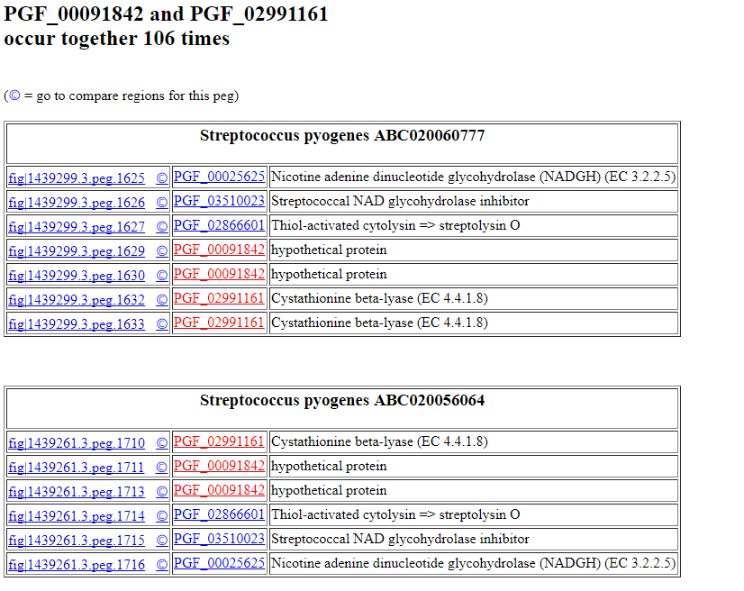
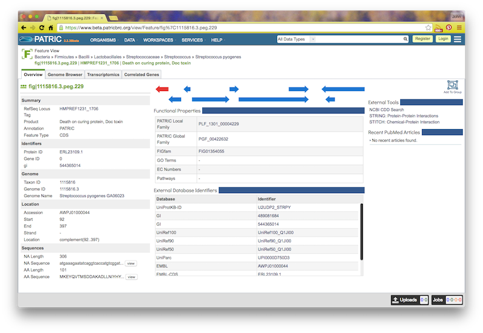
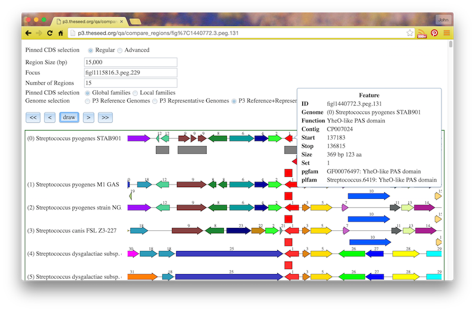
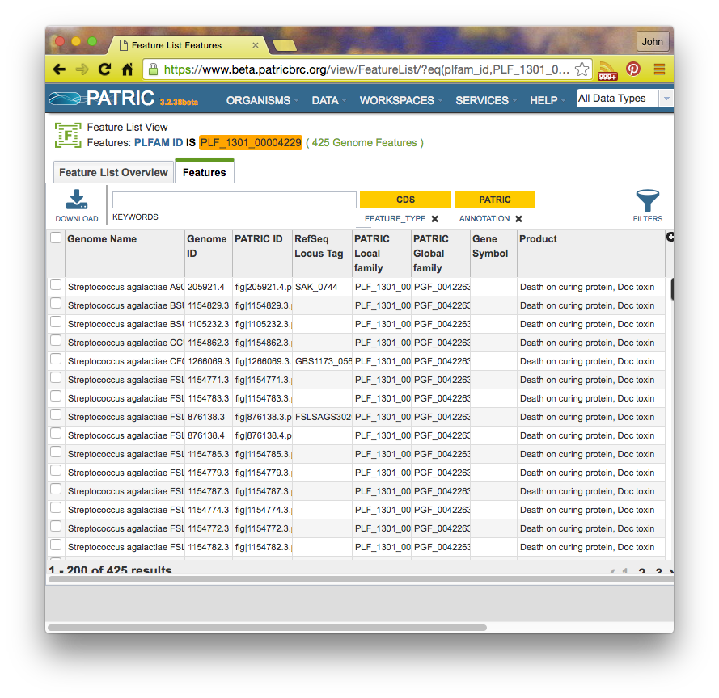

Computing Signature Clusters: an Application of the Command-Line Tools¶
Introduction: What is a Signature Cluster?¶
In this tutorial, we show how to use a tool that we have created to help you locate clusters of genes that distinguish genomes from two designated sets of genomes. For example, suppose that you have a set of genomes from a given species and a second set from different species in the same genus. In this case, we might look for chromosomal clusters that occur in most genomes from the specific species, but almost never occur in genomes from a different species in the same genus. This is just one of a growing set of tools you can use to access BV-BRC data, but we think of it as extremely interesting.
So, the general operation we are implementing might be described as follows:
Define a set of closely-related genomes (usually a set of genomes from a single species). Call this set GS1.
Define a second set of genomes which will be used for comparison and call it GS2. Typically this would be a set establishing a “context”. The usual contents of GS2 would be genomes from the same genus, but different species.
Then define the notion of signature family as a protein family in which all members (or almost all members) occur in all genomes in GS1, but none (or very few) genomes in GS2.
Finally, define a signature cluster as a set of instances of signature families that occur close to one another on the contigs of a genome in GS1. Since a signature cluster contains only signature families, by definition it can occur in GS1, but only very seldom in GS2.
We will argue that the signature clusters are very effective for locating chromosomal clusters that are very local phylogentically and correspond to molecular machines that are quite different from those that include the core cellular machinery. They are things like
virulence factors,
antibiotic fabrication mechanisms,
prophages,
special transportation cassets,
and so forth.
How to Compute Signature Clusters¶
In this short tutorial we will compute signature clusters for Streptococcus pyogenes. The actual computation can be done for any genus and species for which you have enough genomes (say, 20 within the species and 20 from different species within the same genus).
Step 1: Defining GS1 and GS2¶
The following three commands create three tables encoding genome sets. Note that each row in each table contains two fields– a genome id and a genome name.
p3-all-genomes --attr genome_name --eq genome_name,Streptococcus >all.strep.genomes
genome.genome_id genome.genome_name
1313.7014 Streptococcus pneumoniae P310839-218
208435.3 Streptococcus agalactiae 2603V/R
171101.6 Streptococcus pneumoniae R6
160490.10 Streptococcus pyogenes M1 GAS
568814.3 Streptococcus suis BM407
862971.3 Streptococcus anginosus C238
888833.3 Streptococcus australis ATCC 700641
864569.5 Streptococcus bovis ATCC 700338
482234.3 Streptococcus canis FSL Z3-227
p3-match --col 2 pyogenes <all.strep.genomes >pyogenes
genome.genome_id genome.genome_name
160490.10 Streptococcus pyogenes M1 GAS
1314.192 Streptococcus pyogenes strain NGAS322
798300.3 Streptococcus pyogenes MGAS15252
864568.3 Streptococcus pyogenes ATCC 10782
1314.198 Streptococcus pyogenes strain NGAS743
1314.197 Streptococcus pyogenes strain NGAS596
1314.196 Streptococcus pyogenes strain NGAS327
1314.168 Streptococcus pyogenes strain 19615
301451.4 Streptococcus pyogenes serotype M18 strain CPost
p3-match --col 2 pyogenes --reverse <all.strep.genomes >not.pyogenes
genome.genome_id genome.genome_name
1313.7014 Streptococcus pneumoniae P310839-218
208435.3 Streptococcus agalactiae 2603V/R
171101.6 Streptococcus pneumoniae R6
568814.3 Streptococcus suis BM407
862971.3 Streptococcus anginosus C238
888833.3 Streptococcus australis ATCC 700641
864569.5 Streptococcus bovis ATCC 700338
482234.3 Streptococcus canis FSL Z3-227
862969.3 Streptococcus constellatus subsp. pharyngis C1050
The first command looks at all of the BV-BRC genomes, keeps only those which have ‘Streptococcus’ within the genome_name field, and writes out one line for each extracted Streptococcus genome. This is actually a fairly complex incantation, so we urge you to try to construct the corresponding command for a different species (say, Staphylococcus).
Then the p3-match commands create a list of Streptococcus pyogenes genomes and a set of Streptococcus genomes that are not from the pyogenes species.
Once you have constructed your genome sets, verify that they include what appear to be a reasonable collection of genomes.
Computing Signature Clusters¶
Now that we have GS1 and GS2 defined, we can compute the signature clusters using something like
p3-related-by-clusters --col=1 --gs1 pyogenes --gs2 not.pyogenes --sz1 20 --sz2 20 --min 0.8 --max 0.1 --iterations 2 --output Strep
Let us briefly discuss the process being requested:
First, we take 20 random genomes from GS1 and 20 from GS2 (these sizes are specified by sz1 and sz2) Then, we compute the protein families that occur in at least 80% of the genomes in GS1, but no more than 10% of the genomes in GS2 (the thresholds are specified by the min and max arguments). These are the signature families that we will use to search for signature clusters.
Then we compute the desired signature clusters, based on the randomly selected genome sets.
We save the clusters computed; this is called a single iteration. We redo the selection of random genomes, computation of signature families, and computation of signature clusters (added to a growing set), until we have completed the requested number of iterations (in our example, we specified “2”).
Thus, we build up a collection of signature clusters recorded in the designated output directory. If you look in the file related.signature.clusters in this directory, you will see something like the following, showing the family pairs found and how many times each pair occurs.
PGF_00091842 PGF_02991161 106
PGF_03507811 PGF_03520364 75
PGF_00422632 PGF_03520364 75
PGF_00018136 PGF_00059826 59
PGF_00059826 PGF_03510607 57
PGF_00061508 PGF_03507845 55
PGF_00031781 PGF_03498768 52
PGF_03507845 PGF_03520364 50
PGF_00413443 PGF_02239557 48
PGF_00423533 PGF_03512306 46
PGF_03504450 PGF_03507868 45
PGF_00006421 PGF_00341140 44
PGF_00795056 PGF_03499087 43
PGF_00011284 PGF_00011285 41
PGF_00053076 PGF_00221701 41
In the next section, we will show how to put these results in a more useful form.
Looking at the Results¶
To look at the computed signature clusters, use something like
p3-format-results -d Strep | p3-aggregates-to-html >clusters.html
The results will look something like this:

If you click on the feature ID, you will be taken to the Patric Feature Page for that feature:

If you click the circled C on a feature, you will see a “Compare Regions” screen centered on that feature, like this:

If you click on a family id, you will be taken to a Patric Family Page:

Summary¶
We have implemented a tool that, given two sets of genomes, will compute the signature clusters that occur (or tend to occur) in genomes from one set but not in genomes from the other. The sets of genomes are taken from the current release of the BV-BRC database.
We have illustrated one intended use: finding the signature clusters that distinguish a species from other species within a phylogenetic context (the genus).
There are others that you might try. For example, if you wanted to find which EC numbers occur in clusters of signature families for Streptococcus pneumonia, but not in Streptococcus pyogenes, you should be able to locate these (as well as those that occur in S.pyogenes, but not in S.pneumo).